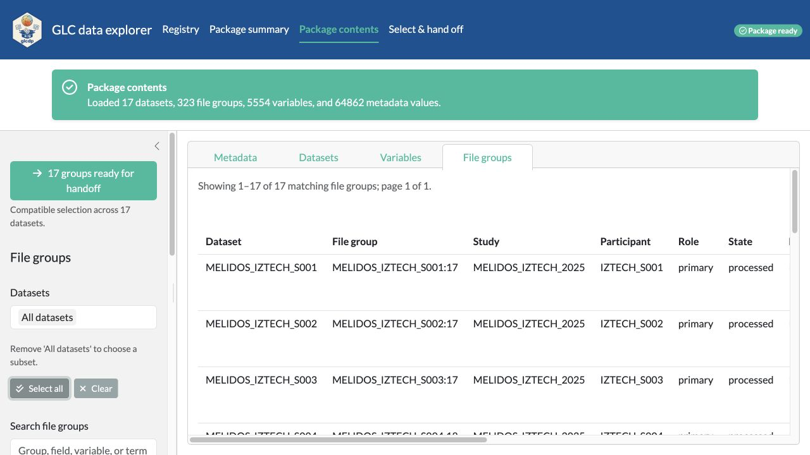
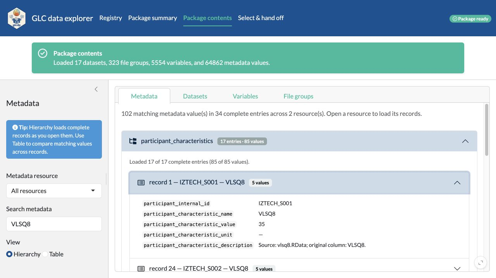

Explore and hand off data with the Shiny app
Source:vignettes/glc-data-explorer.Rmd
glc-data-explorer.RmdThe GLC data explorer provides a guided path from a registered data
package to an annotated R handoff script. You can hand off the package
and selected metadata without importing measurement files, or build a
reproducible data selection without first learning every
glcdp function.
This walkthrough uses the validated MELIDOS IZTECH package and its
current schema 3.0.2 declarations. It first explores all 17 participant
datasets and their repeated chest-sensor groups. The preview and export
steps then narrow to participant IZTECH_S001, dataset
MELIDOS_IZTECH_S001, and file group
MELIDOS_IZTECH_S001:17.
Install the optional application dependencies once, then start the app:
install.packages(c("shiny", "bslib"))
glcdp::glc_explore()The app opens in a browser. It runs in the current R session, and package data are not uploaded to another service.
1. Open the validated IZTECH revision
The Registry starts with packages whose current
validation status is pass. Search for iztech
to isolate the MELIDOS IZTECH package. The status message still reports
the complete registry count, while the table shows the matching
repository, validation state, and abbreviated latest-passing SHA.
Only rows with a latest passing revision have an Open button. Opening the IZTECH row uses its exact passing commit rather than a moving branch.

2. Understand the IZTECH package at a glance
After the package opens, the app moves directly to Package summary. The validated revision contains 1 study, 17 datasets, 17 participants, 12 devices, 323 files, and 5,554 variable declarations. Each value box is a shortcut to the corresponding inventory or metadata view.
Package details below the boxes pin the source repository, complete
revision SHA, schema version 3.0.2, registry verification,
modalities, and Europe/Istanbul time zone.

The central success message also offers Load package contents, which starts the larger inventory load while the summary remains visible. The same central box confirms completion and offers Open package contents; a failed load can be retried there. Opening the completed contents starts on Metadata, the first Package contents view.
3. Inspect schema-defined variables
Use Package contents to examine four complementary views:
- Metadata provides both a hierarchical view and a comparison table.
- Datasets connects studies, participants, devices, modalities, file groups, files, variables, and time zones.
- Variables shows declared source columns, including names, types, units, semantic terms, and primary status.
- File groups shows which source files belong together.
The sidebar changes with the active view, has no redundant generic heading, and shows only relevant filters. For the many participant-specific file groups, filter by device, wearing position and type, modality, role, state, contained variable, or semantic term. Choices within a field use OR, while active fields combine with AND. File-group and variable results are paged in groups of 100, so switching views does not mount thousands of table rows in the browser. Search and field selectors still cover the complete inventory. Above the File groups filters, a compact handoff button summarizes the complete filtered selection. When it is green, use n groups ready for handoff to transfer every currently matching group, not only the visible page, and preselect the corresponding datasets and exact groups in the handoff workflow. When it is orange, Want to import these files? Filter them first opens a concise explanation of the incompatible fields and keeps the user in Package contents to refine the filters.
The filtered state below confirms that all 17 IZTECH chest-sensor groups are compatible for a direct handoff and offers the green transfer action above the filters.

The Variables view is narrowed to
MELIDOS_IZTECH_S001 and the acceptability declarations.
Their schema-defined factor type is visible in the
inventory screenshot below. glc_read() also constructs
factor levels in schema-declared order; the code-based vignettes show
those factor_values and imported levels directly.
The Package contents step loads the metadata into the app once. The
metadata Hierarchy initially renders only resource
summaries in the browser. Opening a resource renders complete records in
manageable batches; opening a flat record shows its fields directly, and
participant-characteristic labels include both the participant and
characteristic name. A schema-defined singular flat child object, such
as a variable’s dataset_file_variables_term, is shown
inline with its parent; collections that can contain multiple records,
such as dataset variable terms, retain their record hierarchy even when
the current package happens to contain one. Use Table
when you want configurable paging across every matching leaf value.
Within a record, fields that occur more than once are folded by default
and show their record count. Record nodes use a general record icon that
applies equally to people, files, terms, and other schema objects. For
example, the IZTECH study-group inclusion, exclusion, and dataset lists
can be expanded independently, while the single-valued name,
description, and size stay visible in a compact two-column layout. The
label column expands to the longest field name in its record and keeps
code labels on one line.
The thin activity pulse at the top of the page and local output spinners appear when a tab or filter still needs reactive work. The central status box remains the source of descriptive progress for the longer package-summary, package-content, selection, and preview loads. Expanding a dense metadata record also shows an indeterminate progress bar and record-specific loading message in the exact place where its values will appear.

The focused metadata view below searches for VLSQ8.
Opening the matching participant-characteristics resource renders all 17
complete records, while opening one record shows its five fields
directly.

4. Choose a handoff and follow the guided steps
Open Select & hand off. A full-width wizard keeps all seven switchable steps visible across the top. Each step uses a control column on the left and a stable information column on the right, so status and validation messages no longer move the wizard. On wide screens, compact controls in the left column also share rows. The wizard fills the available window height, with its controls scrolling inside a stable card and equal-width Back/Continue actions anchored at the bottom. Long dataset and exact-file-group selections scroll inside their controls rather than stretching the step. The first step pins the opened repository and exact validated revision, then asks what the generated script should load.
Choose Package and metadata only when measurements
are not needed. Select the metadata resources in 1. Package
& metadata; all core resources are selected initially.
Review metadata export goes directly to the generated
script. No dataset, file-group, variable, or participant choice is
required, and the data preview is intentionally skipped. The script
opens the exact revision, downloads only the selected metadata resources
into a manifest-backed directory, reopens the local package, and assigns
the package and named metadata list to local_package and
glc_metadata. Temporary handoff settings are removed after
the script runs.
Choose Import matching data for measurement data, then work from top to bottom:
- In 2. File groups, either use the groups transferred from Package contents or select datasets and apply device, wearing-position, modality, role, state, contained-variable, or semantic-term filters. Exact file groups (advanced) is available for a final manual subset.
- In 3. Participants & devices, optionally narrow people by age range, sex, gender, characteristic, or participant id, and devices by manufacturer, model, sensor type, or device id. Numeric characteristics use an inclusive range slider.
- In 4. Variables & rows, optionally search for semantic terms and source-variable names. Primary selects the variables declared primary by the schema and falls back to all variables when none are declared. Use all variables clears both variable controls.
- Choose All rows or a Maximum rows per file, then choose LightLogR-compatible or source-column collection.
- Use 5. Review, 6. Preview, and 7. Export to R to inspect the selection, sample the data when applicable, and download the script. Review keeps both tables in the control column: Selection summary is expanded initially, while Included file groups stays collapsed until needed. Any visible wizard step can be revisited directly.
A transfer from Package contents switches to the data workflow, opens the file-group step, and reports how many groups across how many datasets were seeded. Leaving Exact file groups (advanced) empty includes every group matching the field filters. Once an import semantic term or source name is selected, the Explorer automatically retains one collectable subset and separately reports how many groups were excluded by discovery fields and by compatibility. This avoids presenting one error for every group that does not contain the requested variable. The included-group table is paged at 100 rows and long identifier lists in the summary are abbreviated, while the exported script still retains the complete exact selection.
Selections made in 2. File groups remain the user’s baseline. Later participant, device, variable, and row filters narrow the active result without rewriting that baseline. If a later filter is cleared, the previously selected datasets and exact file groups become active again instead of having to be reselected.
The screenshot starts with all 17 datasets, filters the file groups
to the chest wearing position and groups containing
MEDI, and requests source variable MEDI with
semantic term melanopic_edi. The field filters retain 17 of
323 groups and explain that 306 were excluded. The variable filters
retain all 17 compatible groups, so the selection stays ready instead of
producing a long incompatibility error.

5. Preview a small sample
For the smaller preview and export walkthrough, narrow the selection
to MELIDOS_IZTECH_S001:17 and click Use all
variables. The resulting summary contains participant
IZTECH_S001, device IZTECH_AL02, 1 dataset, 1
file group, all 37 source variables, 1 file, and an estimated transfer
of 11.4 MB. The collection mode remains
LightLogR-compatible.
Open 6. Preview to inspect data before exporting.
The default reads at most 10 rows from each of at most two files.
Files to preview defaults to two and is capped by the
number available in the selection; this one-file example therefore uses
one. Enter another row limit, from 1 to 1000, or file limit when a
larger or smaller sample is more useful. Both preview settings are
separate from Maximum rows per file, which is part of
the reproducible selection and is passed to glc_read() by
the exported script.
The preview limits rows parsed from each file, but a remote file must still be transferred completely. The app therefore shows the estimated transfer for the chosen preview files—11.4 MB in this example—before building the preview. After Build preview completes, the collected table appears immediately below that button in the control column. Only the result region scrolls; the equal-width Review and Continue to Export to R buttons remain visible at the bottom of the step.
The collected table demonstrates the 3.0 import path in the app: the
package dataset becomes Id, the declared timestamp becomes
a timezone-aware Datetime, schema booleans such as
is.implicit are logical values, and provenance fields
remain visible. The first chest-sensor records are implicit
pre-recording timestamps, so their sensor measurements are correctly
shown as missing rather than being coerced to another value.

6. Export the reproducible R workflow
Open 7. Export to R and download the generated R script. The same script is shown directly beneath the download button, while the Preview button stays fixed at the bottom of the step. For a data handoff, the script shown for this selection pins the full latest-passing SHA, participant, device, dataset, file group, all source variables, maximum rows per file, and LightLogR-compatible collection mode. Broad annotations explain each operation. The script:
- records the registry timestamp, exact passing SHA, and selected ids;
- reuses a matching local manifest-backed download or downloads the selected file;
- opens that local package;
- defines the requested
glc_read()operation, including its row limit; and - collects the result into
glc_datawith the chosen column mode; and - removes temporary handoff settings, leaving only
local_packageandglc_datacreated by the script.

After the download completes, the app names
melidos-iztech-glc-dataset-selection.R and confirms that it
can now be run in R. Continue exploring to adjust the selection, return
to the Registry for a different package, or close the browser tab or
app.

The downloaded script is the durable handoff: save it with the analysis so the selected package commit and either its metadata resources or its measurement files, variables, schema-driven import, and collection behavior remain reviewable and repeatable.